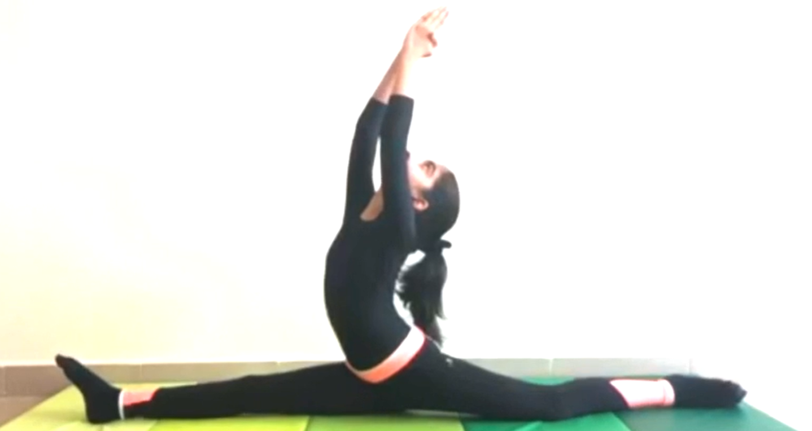

SPLIT LEG POSE

Steps to perform Split Leg Pose
- Kneel on the floor. Step your right foot forward about a foot in front of your left knee, and rotate your right thigh outwardly. Do this by lifting the inner sole away from the floor and resting the foot on the outer heel.
-
Exhale and lean your torso forward, pressing your fingertips to the floor. Slowly slide your left knee back, straightening the knee and at the same time descending the right thigh toward the floor. Stop straightening the back knee just before you reach the limit of your stretch.
-
Now begin to push the right heel away from your torso. Because we started with a strong external rotation of the front leg, gradually turn the leg inward as it straightens to bring the kneecap toward the ceiling. As the front leg straightens, resume pressing the left knee back, and carefully descend the front of the left thigh and the back of the right leg (and the base of the pelvis) to the floor. Make sure the center of the right knee points directly up toward the ceiling.
-
Also check to see that the back leg extends straight out of the hip (and isn’t angled out to the side), and that the center of the back kneecap is pressing directly on the floor. Keep the front leg active by extending through the heel and lifting the ball of the foot toward the ceiling. Bring the hands into Anjali Mudra (Salutation Seal) or stretch the arms straight up toward the ceiling.
Stay in this pose for 30 seconds to a minute. To come out, press your hands to the floor, turn the front leg out slightly, and slowly return the front heel and the back knee to their starting positions. Then reverse the legs and repeat for the same length of time.